ВладелецМихаил11 лет опыта в настройке ГБО
Газ поставить может любой. Мы отвечаем за то, как машина едет после.
От 7 часов
Экспертная настройка — не наши слова, а мнение завода. Европа Газ настраивает ГБО по нашим калибровкам
Обкатная настройка. Сохраняем мощность двигателя. Входит в стоимость
Гарантия до 60 000 км. Сломается — починим и перенастроим бесплатно
Регистрация в ГИБДД. Бумаги, лабораторию и техосмотр берём на себя
3 058машин на газу с нашей настройкой
У нас обслуживаются корпоративные автопарки
Мы не отдаём машину сразу после сборки. Настройщик садится за руль вместе с вами и настраивает её в движении: разгон, нагрузка, разные обороты, с кондиционером и без. По-другому настроить точно нельзя.
«Настройка на высоте, на разных режимах работы двигателя что-то корректируют в ЭБУ газа. Машина едет как на бензине, по ощущениям потери мощности нет»
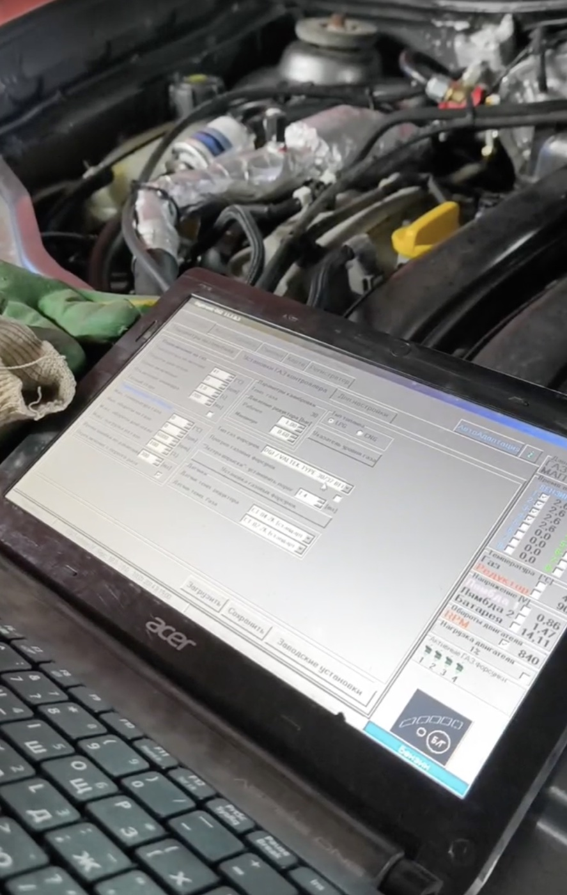
Когда прошивки под ваш автомобиль нет — мы её пишем с нуля
Мы делаем так, чтобы машина не теряла в мощности
Мы не берём доплату за то, что должно стоять по умолчанию.
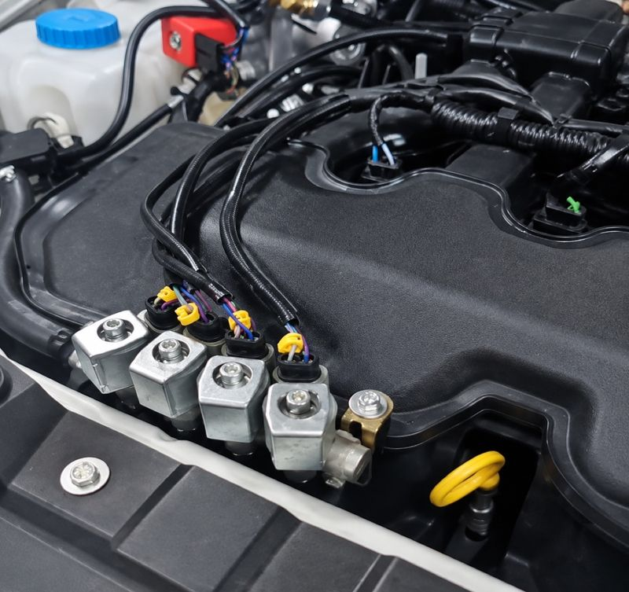
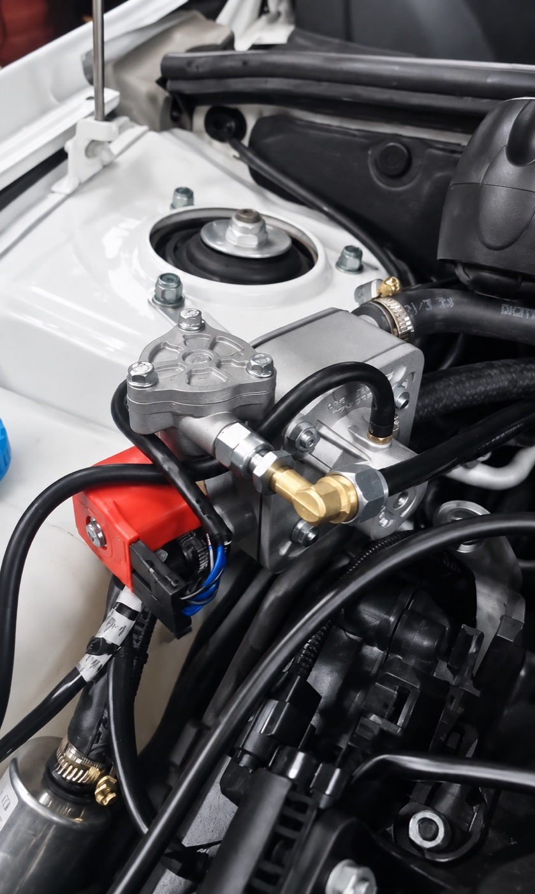
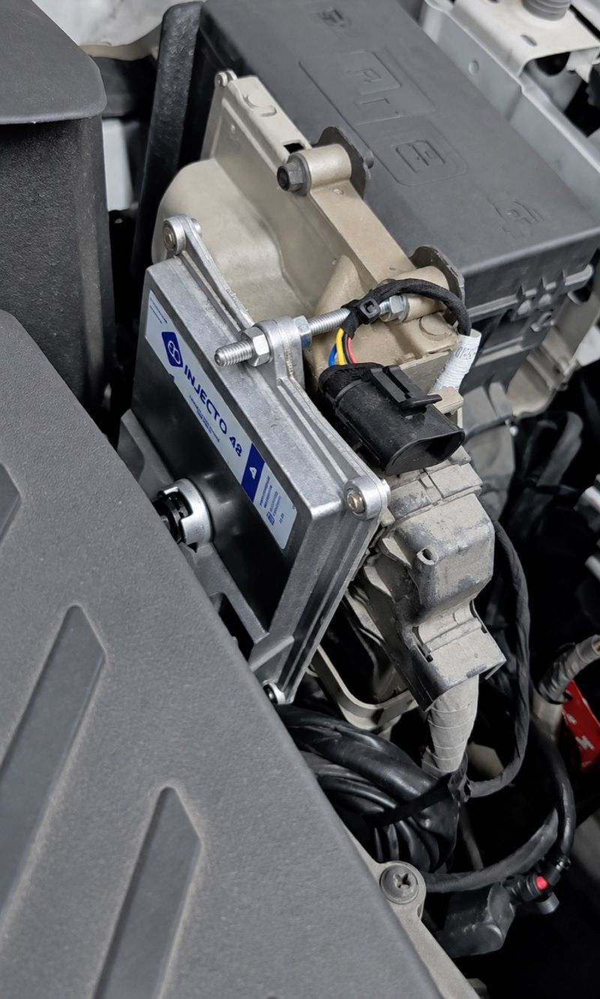
Расчёт примерный и не является публичной офертой. Точную экономию и стоимость назовём после осмотра машины.
Никаких скрытых позиций. Если хотите другой редуктор или другие форсунки — поменяем, с доплатой и заранее оговорённой ценой.
Нулевое ТО через 1500–2000 км — мы не исчезаем после оплаты: первая корректировка делается по факту того, как машина реально поехала. Дальше каждые 10 000 км: фильтры, корректировка блока, опрессовка, проверка соединений и РТИ, крепление баллона.
Берём на себя лабораторию, техотдел МРЭО, оформление СБКТС и запись на фотофиксацию. Регистрация в ГИБДД — это дополнительная услуга. Вам остаётся один визит в МРЭО в конце — по закону машину предъявляет владелец.
* при соблюдении плановых ТО
Газ поставить может любой. Мы отвечаем за то, как машина едет после.
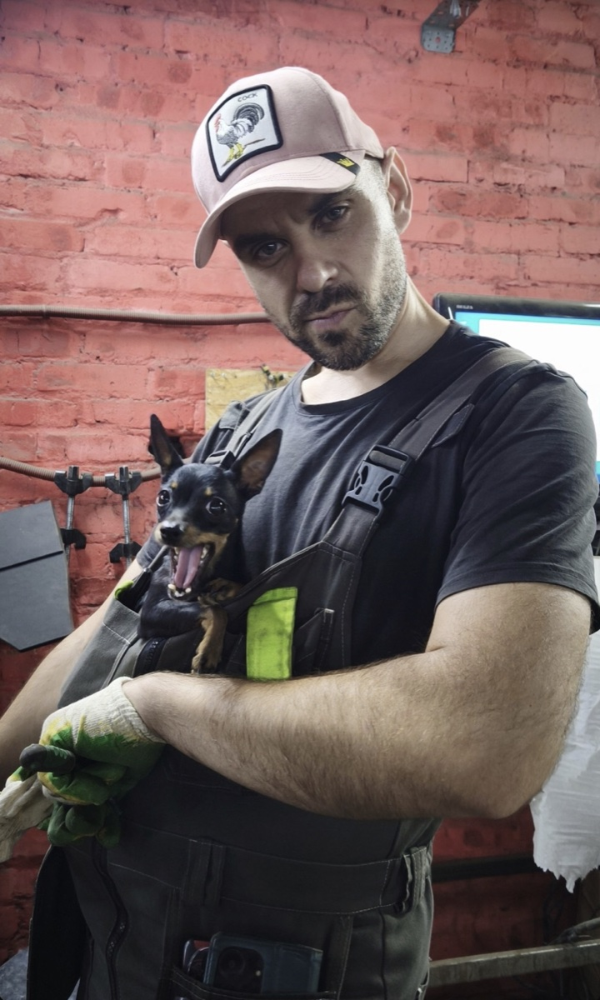
Пока сам не проеду на машине — не отдам. За столом настройку не видно.
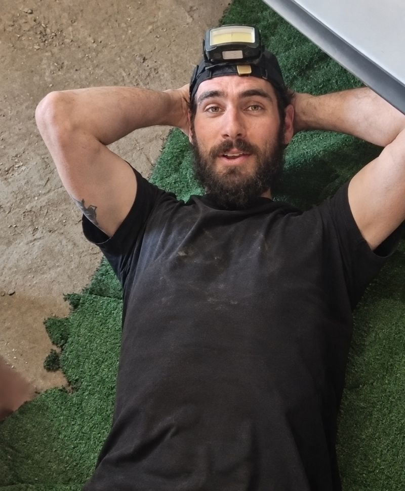
Если готового решения под машину нет — сделаем своё.
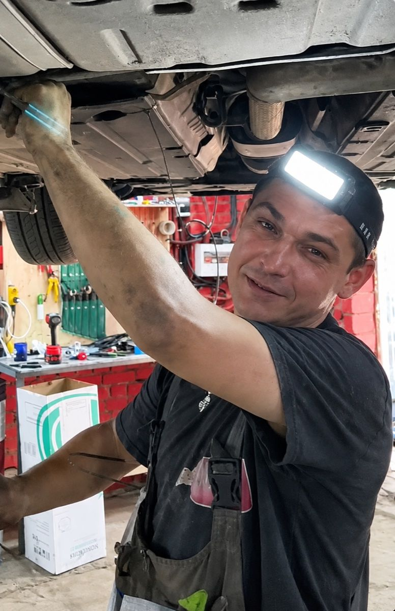
Обычная машина — это не проще. Это просто чаще.
Установим ГБО с нуля или перенастроим установленное
Нет, это миф. Мотор «сушит» не газ, а плохая настройка: слишком бедная смесь перегревает цилиндры. Правильно настроенный газ мотору не вредит — наоборот. У пропана октановое число 105, выше, чем у бензина: нет детонации, топливо сгорает чисто, без нагара на свечах, клапанах и поршнях. И это безопасно — заводы сами выпускают машины на газу: Volkswagen, Mercedes, Opel, KIA, Hyundai.
На пропане просадки нет — машина едет один в один как на бензине. Октановое число пропана 105, выше обычного бензина: топливо сгорает лучше. Для турбомоторов это отдельный плюс — уходит детонация.
В 90% случаев ставится тороидальный баллон вместо запасного колеса — багажник остаётся свободным.
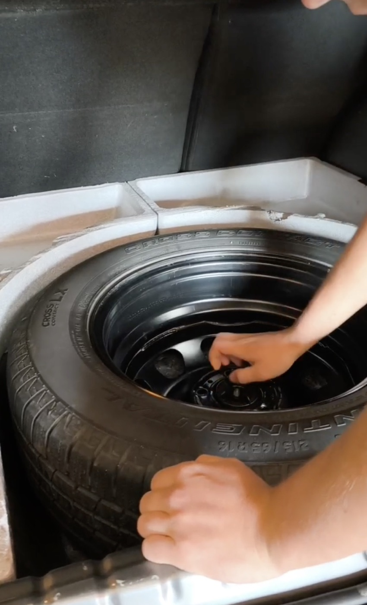
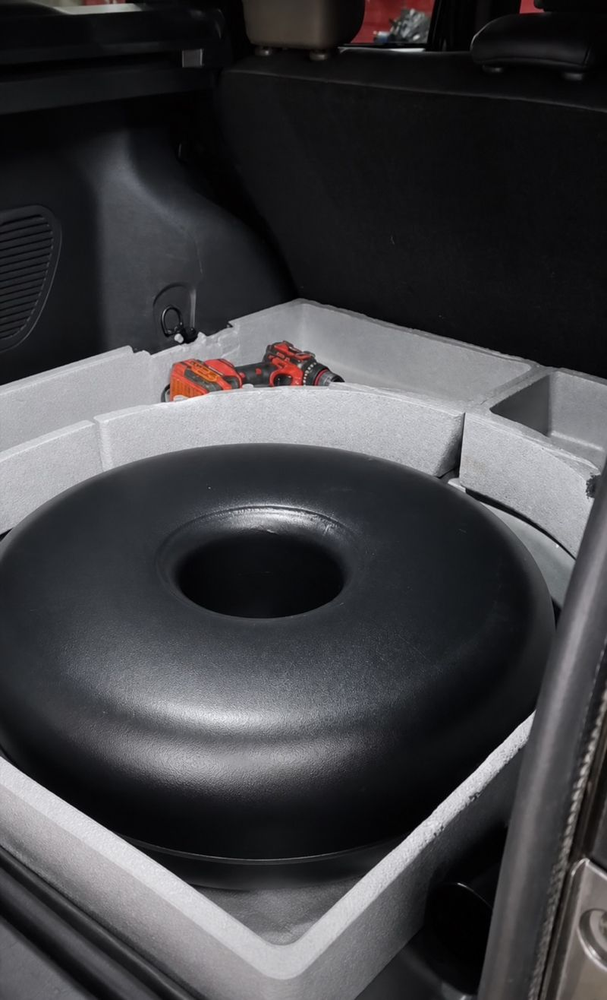
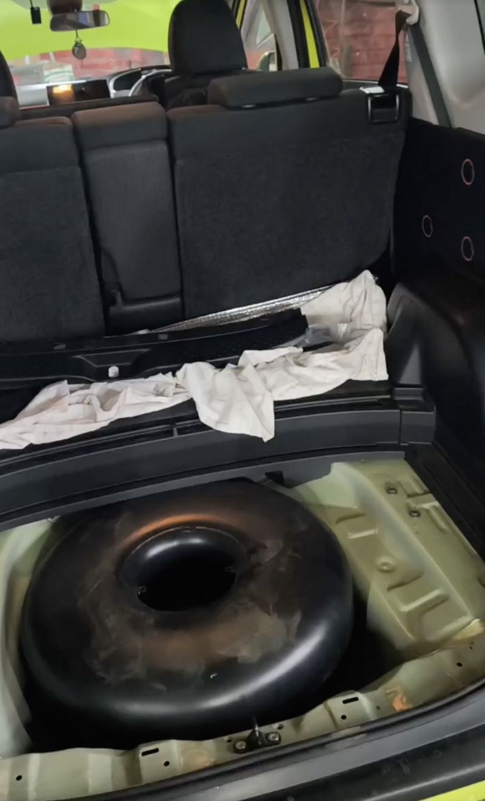
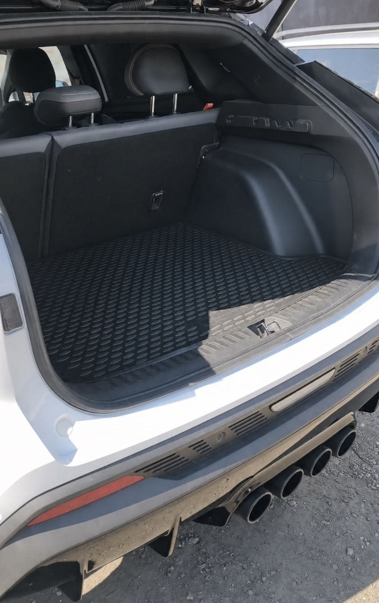
От 7 часов на обычной машине, от 48 часов на прямом впрыске. Мы не просто ставим оборудование — мы выезжаем и донастраиваем его в движении, и это входит в стоимость. Именно поэтому у нас не бывает установки за три часа.
1-я Луговая ул., 15А, микрорайон Заречная
К нам едут из Тулы и Самары. Из любой точки Ростова — максимум час
Вторник–суббота, 10:00–19:00
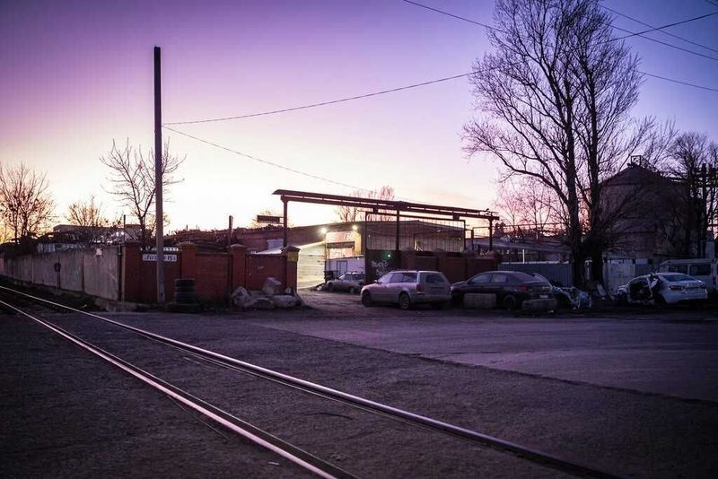
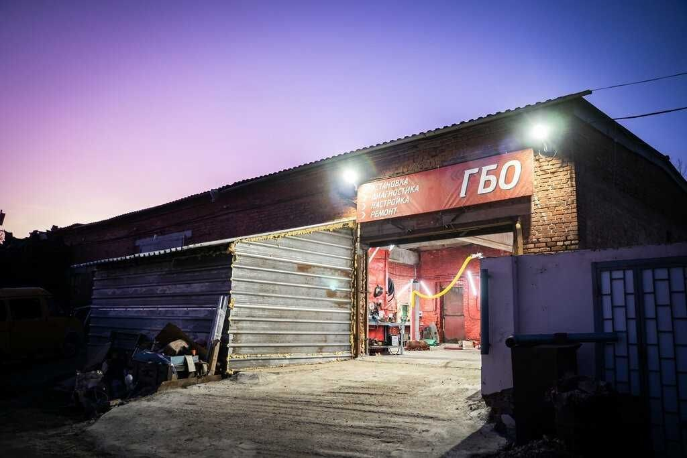
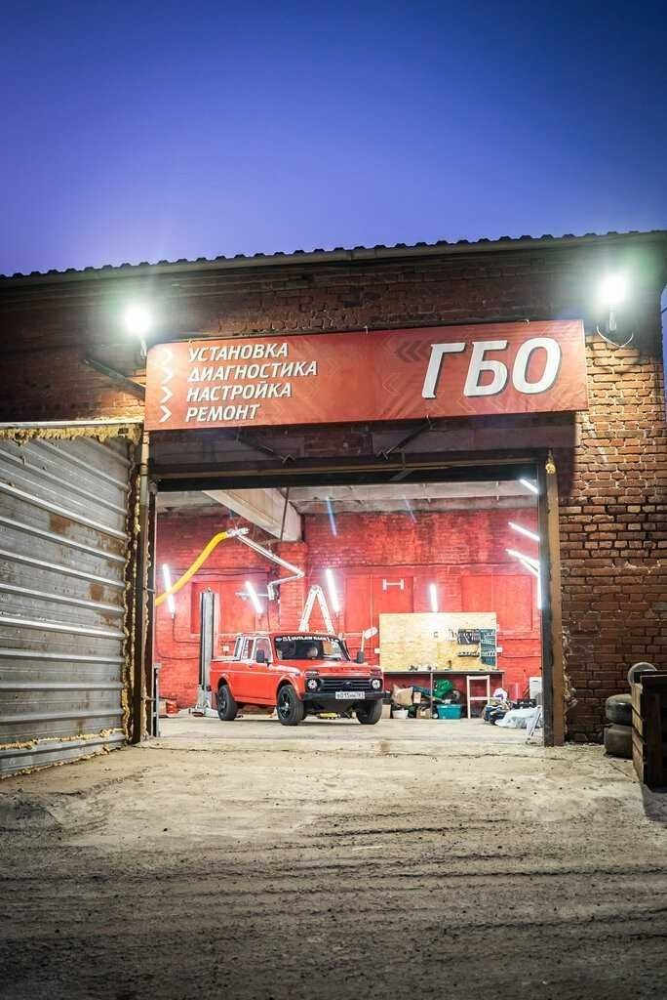
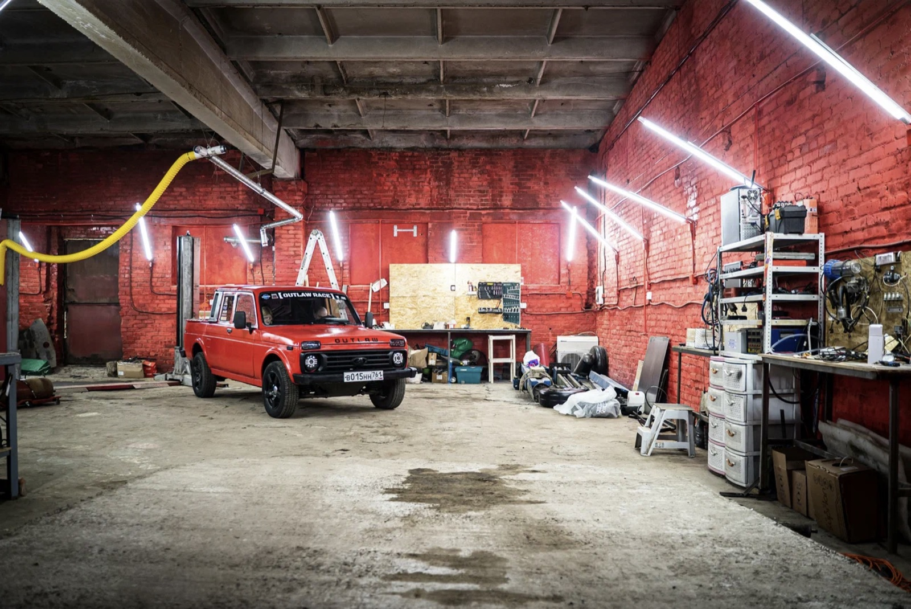
Свяжемся через 15 минут